Born's rule
Born's rule  is the only consistent probability on projections.
is the only consistent probability on projections.
Definitions
- C-algebra*: Banach -algebra with
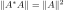
(Gelfand and Neumark 1943). Commutative examples: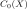
, the classical observables on phase space (Gelfand: every commutative C-algebra is of this form). Non-commutative:
(Gelfand: every commutative C-algebra is of this form). Non-commutative: 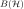
, the compact operators, the Weyl algebra. - State: linear
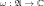
with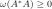
, . Pure states are extreme points of the convex set of states.
GNS construction
Given  , define
, define
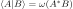
on ; quotient by null vectors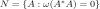
and complete: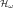
. acts by left multiplication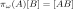
, and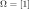
is cyclic with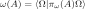
.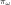
is irreducible iff is pure. Density matrices are the normal states of .
Gleason's theorem
If
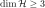
and assigns to each projection a number in
assigns to each projection a number in 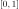
, additive on orthogonal families with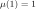
, then for a unique density operator (Segal 1947; Gleason 1957). Consequence (Kochen–Specker): no assignment of definite values
(Segal 1947; Gleason 1957). Consequence (Kochen–Specker): no assignment of definite values 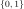
to all projections is possible — non-contextual hidden variables are excluded.Local quantum physics (Haag–Kastler)
To each bounded spacetime region a C*-algebra
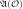
: isotony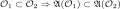
, Einstein causality (spacelike-separated algebras commute), covariance under Poincaré (Haag and Kastler 1964). Different vacua are inequivalent GNS representations of the same algebra (Stone–von Neumann fails for fields).Worked example
Qubit:
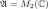
, state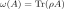
with . For the GNS space is
. For the GNS space is 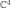
(two copies of , a purification); for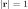
it is and irreducible.Engineering applications
Thermal states of infinite systems (KMS states) underpin quantum statistical mechanics of solids and lasers; Gleason/Kochen–Specker contextuality is a resource certified in quantum-computing benchmarks; the classical limit
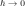
as a deformation of algebras (Landsman) justifies semiclassical device models.Pitfall
Gleason fails in dimension 2 (a qubit admits non-Born measures on projections); Bell/CHSH arguments are needed there.